artistes
Voici la liste des 14 artistes qui participeront à l'édition 2024 d'Amalgame!
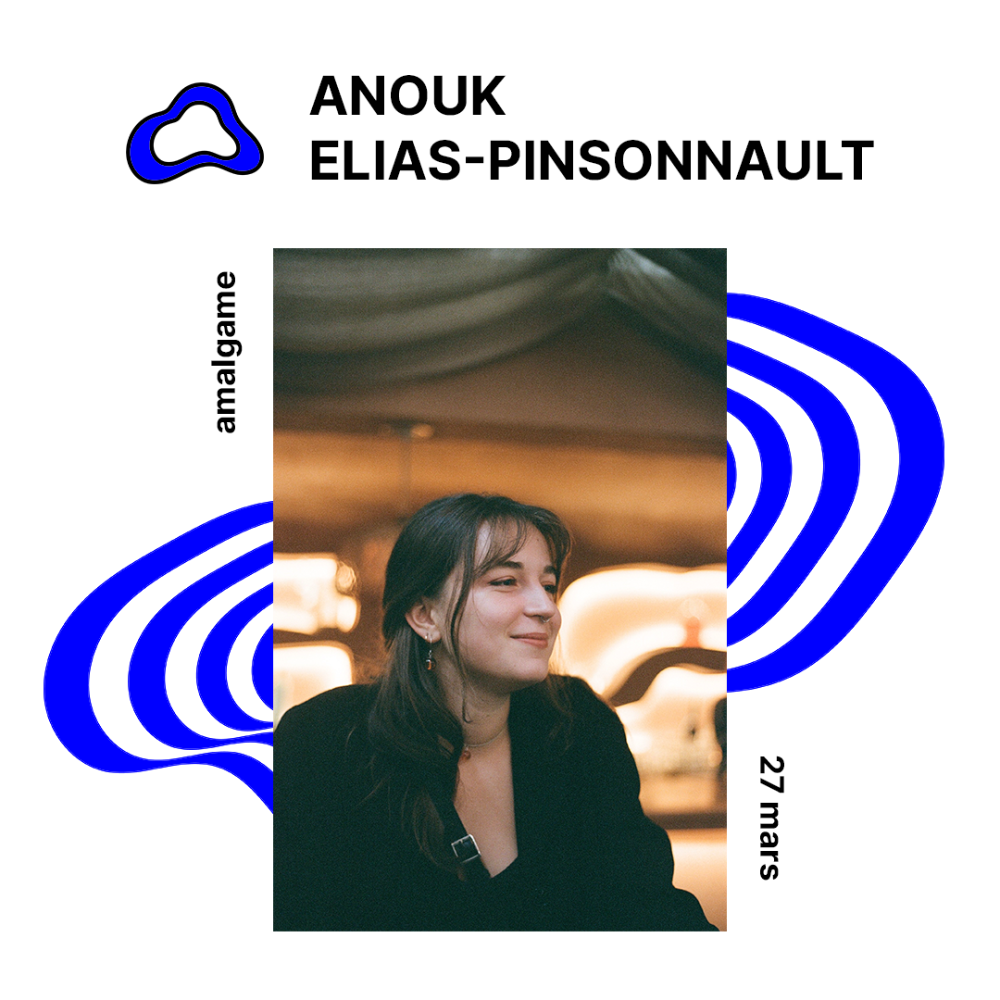
Anouk est une étudiante en Histoire de l’art à l’Université de Montréal depuis septembre 2021. Souvent trop occupée à étudier l’art, elle n’a pas toujours le temps de réfléchir à la place qu’a l’art dans sa propre vie. Toutefois ses études et son entourage artistique la pousse continuellement à réfléchir aux limites entre l’art et la vie. Cet espace liminal la travaille et la pousse à écrire beaucoup de mots.
Depuis quelques semaines, Anouk a pris une distance de sa pratique habituelle orientée vers les mots, en partant en échange étudiant en Italie. Ici les mots sont en italiens, et l’italien n’est pas la langue de Anouk. Elle prend donc ce temps pour arrêter de parler et d’écrire sur les choses pour finalement faire et expérimenter ces choses. La (nouvellement) artiste prend le temps d’absorber la dense et multiple réalité qui l’entoure pour la transmettre en parcelle et en faire des signets.
L’étudiante est intéressée par le rôle de l’art et de la représentation de soi et des autres. Le processus de transformation entre la vulgarité de la réalité et la sacralité d’une œuvre, la banalité et le magique, la rue et la pièce dans laquelle vous lisez ces mots.
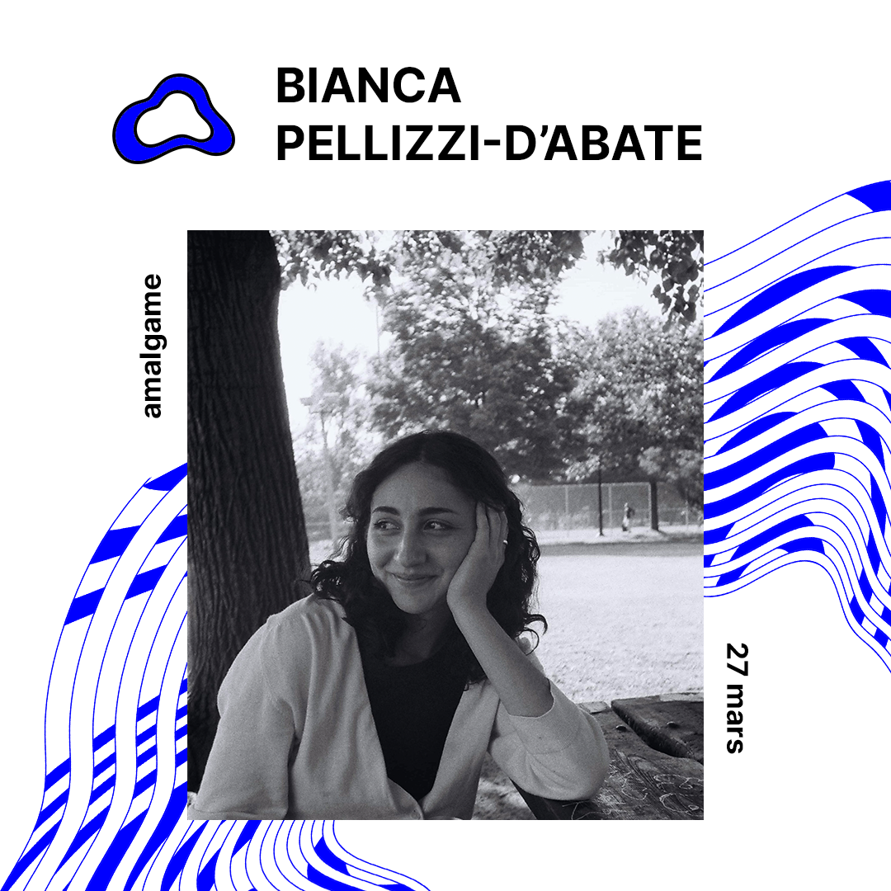
Travaillant l’argile depuis maintenant quatre ans, ma pratique de céramique est enrichie par les autres formes d’art, comme la photographie, le dessin et la peinture, que je pratique régulièrement. Mon amour pour la céramique est né de la nature protéiforme et organique du médium. Ma pratique permet de tracer le lien entre la terre, d’où provient l'argile, et l'œuvre finale figée et transformée. Le processus de création d’une pièce du début à la fin nécessite une grande patience, un travail minutieux et une intuition vis à vis la matière, ces trois éléments m’enrichissent autant dans ma pratique artistique que dans mon quotidien.
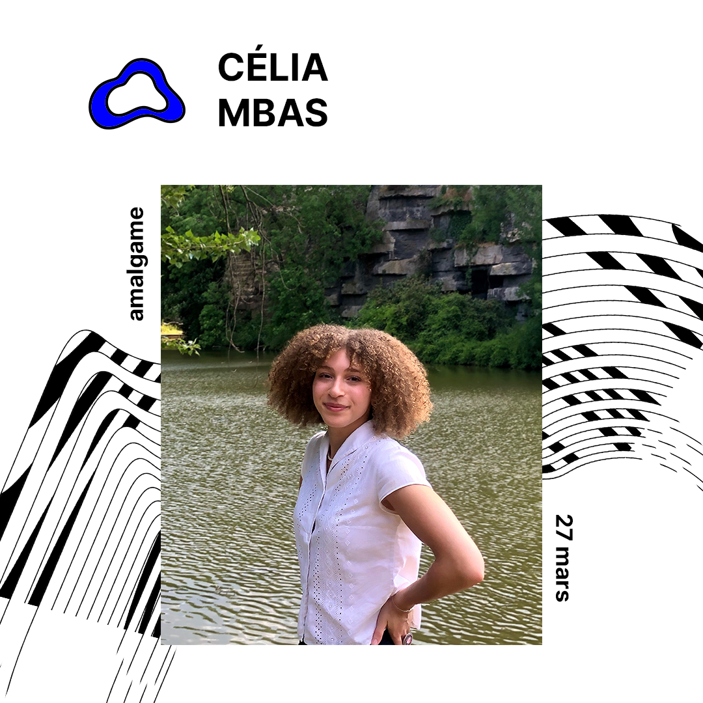
Mes projets artistiques interrogent l’influence de la société sur notre manière de construire notreidentité. Ma pratique a une dimension performative et photographique. Elle prend comme point de départ un travail d’écriture. Le corps est toujours engagé dans l’espace par la performance. Il est essentiel selon moi, il constitue notre première enveloppe face au monde extérieur. Dans l’ensemble de mes projets, je pointe du doigt des maux de la société en abordant des sujets comme ceux de la beauté, du rejet, des réseaux sociaux. Mes performances se positionnent dans une démarche engagée afroféministe. Elles soulèvent les problèmes que posent les normes de beauté des sociétés occidentales, la réduction des femmes à leur apparence physique et plus précisément, la hiérarchisation des couleurs de peau et des textures de cheveux. La conception et la présentation de ces projets me permettent à la fois de m’exprimer sur mes expériences personnelles, vécues par de nombreuses autres personnes, et de les partager.
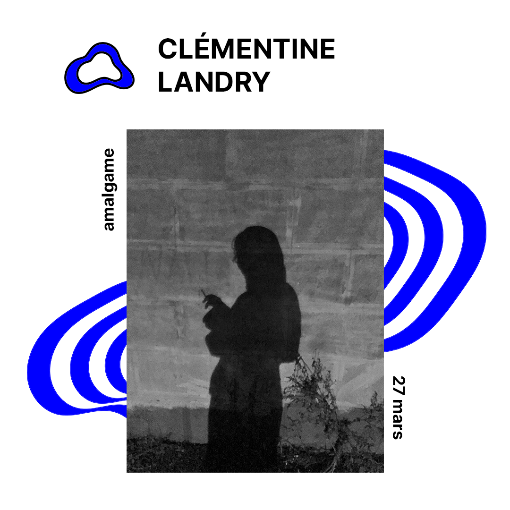
Au bac en histoire de l’art et à la mineure en littérature, j’écris depuis toujours, et je suis dans une démarche poétique depuis 8 ans maintenant. Ma quête prend la forme d’une attention portée aux détails, pour moi la beauté s’y cache souvent.
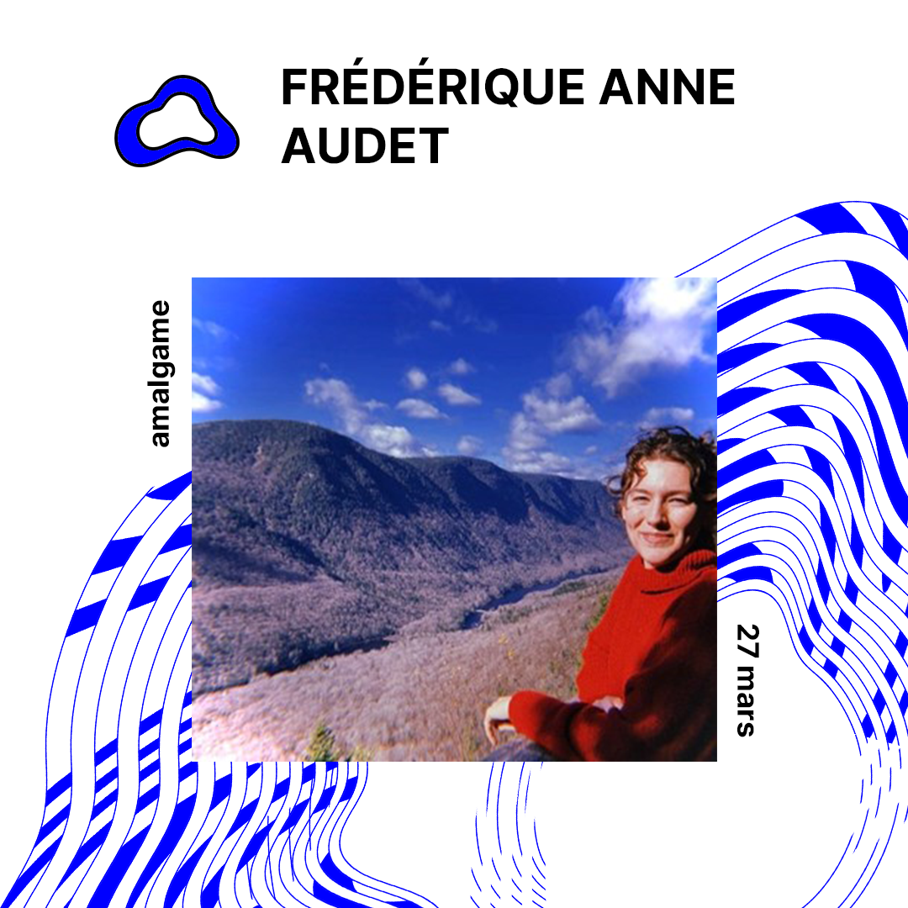
Frédérique Anne Audet est bachelière en histoire de l’art et étudie présentement à la maîtrise. Ses recherches portent sur la photographie et ses formes aux XXe et XXIe siècles. Elle s’intéresse tout particulièrement à l’interaction entre les notions d’art et de document et à la manière dont celles-ci se manifestent chez les artistes québécois.
Sa pratique artistique est basée sur les formes, les couleurs et les matériaux des environnements naturels qu’elle fréquente. Parfois photographiés, parfois amassés, ceux-ci sont travaillés selon des stratégies numériques et plastiques dont le but est de faire émerger leurs possibilités esthétiques et évocatrices. Outre les considérations environnementales et économiques qui motivent cette démarche, il s’agit surtout d’un travail sur la dynamique entre réalité et fiction (une réflexion également amorcée dans son mémoire portant sur la pratique photographique de Raymonde April). Elle emploie divers médiums et techniques qui ont trait notamment à la photographie, au dessin et à la sculpture afin de faire passer des objets et des êtres vivants dans un monde fictionnel ; ce sont les possibilités esthétiques, narratives et sensorielles que ce passage permet qui l’intéresse.
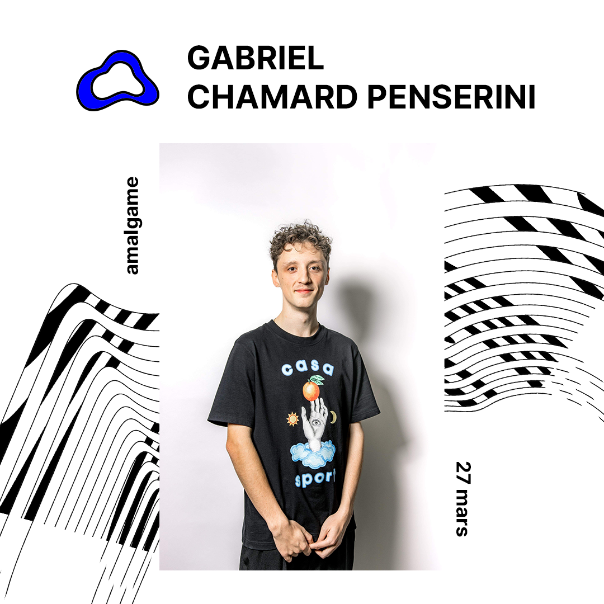
Gabriel Chamard Penserini, étudiant à la majeure en histoire de l’Art et à la mineure en études cinématographiques.
J’articule mon parcours universitaire autour de l’étude de l’image en son sens large. Celle-ci engage selon moi conjointement la discipline de l’histoire de l’art et des études cinématographiques, de manière connexe. Ma mère Francesca Penserini est artiste visuelle de carrière. Elle m’a introduit à un jeune âge au dessin et à la sculpture et m’a encouragé dans toute forme d’explorations artistiques. Dans le cadre du cours de Peter Krausz à l’hiver 2022, j’ai découvert la pratique du collage. J’ai beaucoup aimé utiliser des images comme matériel brut ; la recherche préalable dans les revues mises à notre disposition était en soi une étape très inspirante et équivoque pour moi. J’avais déjà beaucoup de revues diverses chez moi que j’avais accumulées aux fils des années, je me suis alors mis à les dépouiller pour ensuite construire des agencements libres d’images.
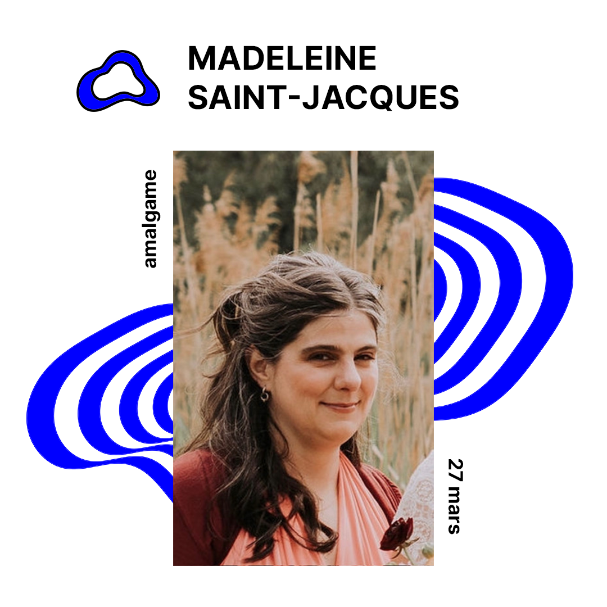
Diplomée en scénographie de l'École nationale de théâtre, je fais mon chemin dans le milieu culturel depuis près de vingt ans, principalement à titre de conceptrice d'accessoires, au théâtre comme à l'opéra.
Ma curiosité et ma soif d'apprendre ne connaissent pas de limites, faisant de moi entre autres aussi une mycologue amateure enthousiaste et une férue d'architecture et d'artefacts ancestraux. Le fil conducteur de mes passions est ma sensibilité au monde qui m'entoure. Je partage mon temps entre Montréal et Tadoussac. Cette contribution à Amalgame est une première incursion au monde des arts visuels.
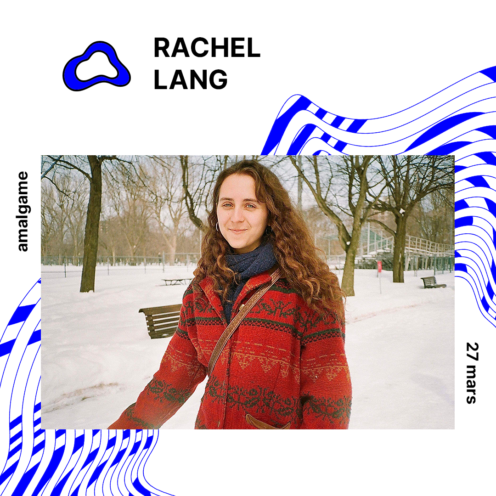
Rachel touche à divers médiums artistiques, passant par le théâtre et la musique, et sera bientôt finissante en sociologie à l’Université de Montréal. Durant son parcours universitaire, elle cherche à renouveler son rapport à l’engagement militant en le combinant avec l’art. Elle souhaite rendre les luttes accessibles à tous.tes, partager la remise en question, faire germer la curiosité intellectuelle auprès des gens qu’elle côtoie de plus ou moins proche. La démocratisation du savoir et les rapports non-hiérarchiques d’apprentissage sont au coeur de ses réflexions et intérêts. Pour cette raison, elle s’intéresse à la poésie engagée, l’écriture de feuilleton ou encore à la création de zine, format qu’elle essaie pour la première fois en automne dernier dans le cadre de son cours de sociologie Genre et sexualité.
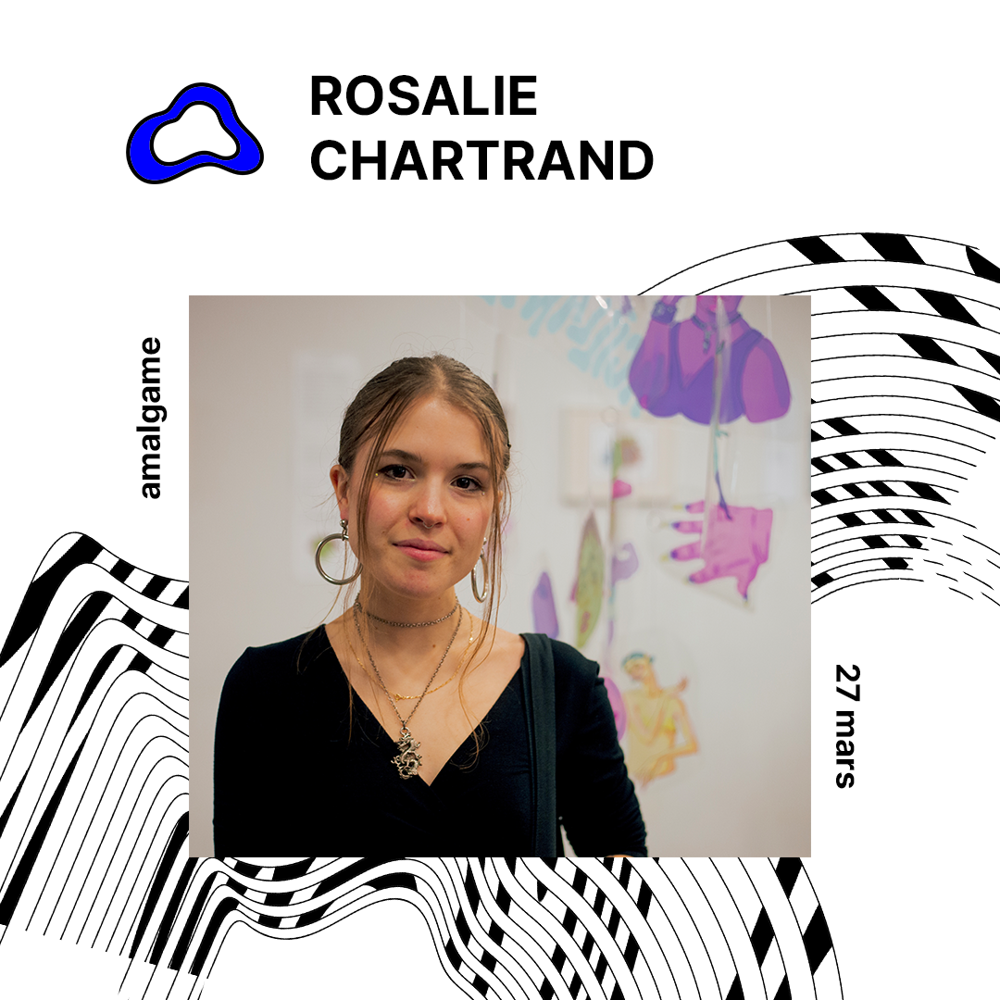
Rosalie est une jeune artiste montréalaise multidisciplinaire. Issue d’une famille de danseur.euses et de musicien.nes, sa pratique inclut autant des médiums plastiques (photographie, dessin numérique, peinture) que des pratiques performatives, souvent liées à son héritage artistique familial. Rosalie travaille également dans l’organisation et la médiation d’activités culturelles. Croyant fortement à l’importance de l’art comme élément de cohésion sociale et de bien-être collectif et individuel, elle cherche à créer des projets qui stimulent des moments de joie, de rencontre, de discussion et d’introspection. Pour cette deuxième édition d’Amalgame, Rosalie explore certaines réflexions qui lui ont été inspirées par son travail de médiatrice culturelle au MACM.
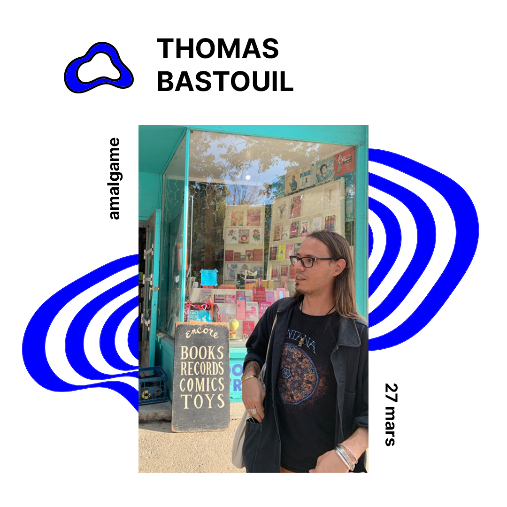
Après un premier parcours en histoire et de l’art et en sociologie à l’Université de Picardie Jules Verne, j’ai voulu remettre à niveau mes connaissances en histoire de l’art et recommencer un cursus. C’est à cette occasion et grâce à quelques bonnes rencontres que je me suis remis à composer des images, le plus souvent seul même si j’espère une occasion en réaliser à plusieurs mains. Mes inspirations sont liées à mes lectures, j’emprunte l’orthographe du vent à Damasio par exemple) ou à la musique (Fuzz, TV and the Radio, Stupeflip...) pour essayer de créer un effet cryptique à mes collages, en dehors de leurs formes.
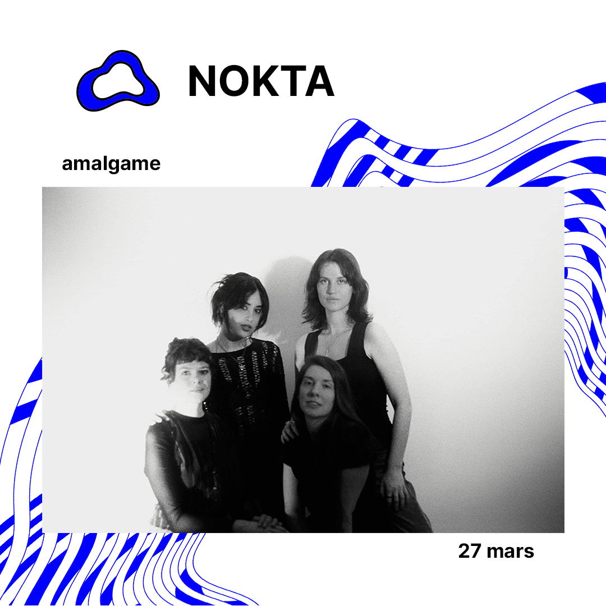
Le collectif Nokta est formé de Julie Chalhoub (elle), Blanche Crotti (elle), Capucine Destoc (elle) et Dadoo Frison (elle).
Julie Chalhoub est une cinéaste libanaise basée à Montréal, actuellement à la maîtrise en cinéma à l'Université de Montréal. Réalisatrice et productrice de "Une Personne Devient Un Objet”, Julie travaille actuellement sur son prochain court métrage. Ses œuvres artistiques explorent la relation entre le corps humain et l'environnement, soulignant que le corps n'est pas seulement une entité individuelle, mais aussi étroitement lié à un contexte plus large. En se concentrant sur les mouvements corporels et sur l'expression physique, sa narration s'éloigne du dialogue pour se déployer à travers le langage corporel.
Blanche est étudiante à la maitrise en recherche-création en cinéma à l’Université de Montréal. Diplômée d’une licence en histoire de l’art (université de Bourgogne) ainsi que d’un certificat en art visuel et médiatique (Uqam), sa pratique artistique et ses recherches explorent la marche urbaine filmée et abordent la possibilité d’une relation de soin (care) entre individus et environnement.
Diplômée en Histoire de l’art et poursuivant ses études en recherche-création en cinéma, Capucine prête une oreille attentive aux récits qu’on lui partage et aime bricoler des histoires à son tour. Ses interrogations portent sur les possibilités d’improvisation et le geste collectif au cinéma, notamment à travers le prisme sonore.
Après avoir obtenu un diplôme en métiers d’art dans le costume de scène, Dadoo a souhaité compléter son bagage en entreprenant des études universitaires en cinéma. Actuellement à la maîtrise à l’Université de Montréal, elle travaille sur un projet de performance dans le cadre de l’option recherche-création sur le thème de l’autoportrait, ou comment appréhender le monde en parlant de soi. Ses intérêts sont vastes et comprennent la photographie, la littérature, la création textile, mais aussi l’ethnographie, qu’elle souhaite regrouper au sein de son projet intermédial.
cliquez ici pour fermer
calendrier
Nous avons hâte de vous accueillir le mercredi 27 mars au local C-1070 du pavillon Lionel-Groulx pour cette deuxieme édition d'Amalgame! Dans cette section
vous trouverez un calendrier complet des dates importantes à retenir.
** Vernissage **
Mercredi 27 mars
10h00 : Ouverture de l'exposition
18h00 : Début du vernissage et de la soirée cocktail
22h00 : Fin du vernissage et de la soirée cocktail
** Dates importantes pour les artistes **
Mercredi 6 mars
Fin de la période de candidature
Lundi 18 mars
11h30-13h00 : Rencontre avec les artistes sélectionné-es (les artistes devront se libérer pour une des deux dates)
Mardi 19 mars
11h30-13h00 : Rencontre avec les artistes sélectionné-es (les artistes devront se libérer pour une des deux dates)
Mardi 26 mars
Montage de l’exposition. Les artistes devront apporter leurs œuvres dans le local d’asso la veille, ou le jour-même (26 mars) au C-1070 avant 11h.
Jeudi 28 mars
Démontage de l’exposition. Les artistes devront reprendre leurs œuvres la veille ou le jour-même (28 mars) avant
15h
Pour toutes question au sujet de l'horaire, n'hésitez pas à contacter
l'AEEHAUM
cliquez ici pour fermer
emplacement
Amalgame se déroulera au local C-1070 du pavillon Lionel-Groulx de l'Université de Montréal. Pour plus d'informations concernant les heures d'ouverture de l'exposition, veuillez vous référer
à la section calendrier du site web.
Une fois sur place, il suffit de suivre les directions affichées par notre équipe pour trouver le local.
Pavillon Lionel-Groulx
3150, rue Jean-Brillant
Montréal (Québec) H3T 1N8
Métro
Les stations de métro les plus proches du pavillon sont les stations Université de Montréal et Côte-des-Neiges
Autobus
Les lignes 11, 51, 119, 166 et 368 passent à proximité du pavillon Lionel-Groulx.
Voiture
Pour celleux qui souhaitent se rendrent à l'exposition en voiture, le garage Louis-Colin offre un stationnement payant directement à côté du pavillon Lionel-Groulx.
Accessibilité
Le pavillon Lionel-Groulx ainsi que le local C-1070 sont accessibles aux personnes à mobilité réduite ou en fauteuil roulant. Pour plus d'informations à ce sujet,
n'hésitez pas à contacter le bureau de la sûreté de l'Université de Montréal au 514 343-7771.
Si vous avez d'autres questions concernant votre visite à l'exposition, n'hésitez pas à contacter
l'AEEHAUM
cliquez ici pour fermer